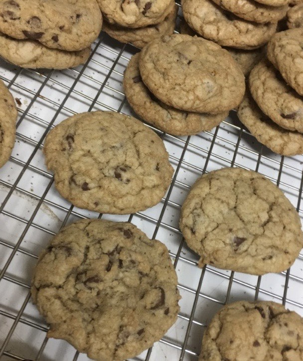

Chocolate Chippers
Better than your grandmas chocolate chip cookies. This easy recipe is a perfect baking staple, and sure to be a fan favorite.
Soft, with a slight crunch, and no shortage of chocolate chips. Wouldn't hurt to make a double batch because these will go quick!
Ingredients
- 1/2 cup unsalted butter, melted
- 1/3 cup granulated sugar
- 1/2 cup packed light brown sugar
- 1 large egg, room temperature
- 1 tablespoon vanilla extract, I like to measure it with my heart
- 1/2 teaspoon baking soda
- 1/2 teaspoon salt
- 1 1/2 cups all purpose flour
- 1 1/2 cups chocolate chips of your choosing, I prefer semi-sweet
Instructions
Note:
This dough requires chilling.
- Place melted butter in the bowl of a stand mixer with a paddle attachment or large bowl if you're using a hand mixer. Add granulated
and brown sugars, and mix on low until mixture is smooth. Mix in egg and vanilla extract on medium speed until combined.
- Lightly stir together baking soda, salt and flour in a seperate bowl and spoon the flour mixture into your stand mixer bowl on
low speed until combined. Be sure to stop and scrape down the sides of the bowl during mixing. Then slowly mix in chocolate chips.
- Line a cookie sheet with parchment paper and scoop two tablespoon balls of dough onto the cookie sheet, loosely cover with plastic wrap
and refrigerate for at least 2 hours or, freeze for 30 minutes.
Note:
Spacing does not matter as we are only chilling the dough.
- Preheat the oven 350 degrees fahrenheit, line a second cookie sheet with parchment paper then remove dough from the refrigerator.
- Space cookie dough balls 2 inches apart on the cookie sheets. Bake for 11-15 minutes, or until the edges are a light golden brown and the
tops are no longer glossy.
- Let cool on the cookie sheets for 5 minutes and then transfer to a baking rack or plate and enjoy!
Additional Notes:
- Makes 22-24 cookies
- Using melted butter as opposed to softened gives it a richer flavor.
- Cookie dough balls can be frozen just be sure to let them thaw slightly before baking.
- Mix ins can be added to create many different versions of this recipe.
- Don't skip chilling!